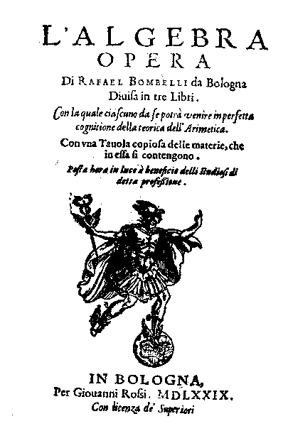

<!doctype html>
<html>

<head>

  <meta charset="UTF-8">
  <meta name="viewport" content="width=device-width, initial-scale=1">
  <link rel="icon" type="image/png" href="../images/infinity32.png" sizes="32x32">
  <link rel="icon" type="image/png" href="../images/infinity16.png" sizes="16x16">
  <title>Complex Analysis</title>

  <!-- dublin core -->
  <meta name="dc.title" CONTENT="Complex Analysis">
  <meta name="dc.creator" CONTENT="Juan Carlos Ponce Campuzano">
  <meta name="dc.date" CONTENT="26-01-2019">
  <meta name="dc.isbn" CONTENT="ISBN-13: 978-0-6485736-0-9">
  <meta name="dc.type" CONTENT="Interactive Resource">
  <meta name="dc.format" CONTENT="HTML">
  <meta name="dc.language" CONTENT="en-US">
  <meta name="dc.rights" CONTENT="https://creativecommons.org/licenses/by-nc-sa/4.0/">

  <!-- social media cards -->
  <meta property="og:title" content="Complex Analysis">
  <meta property="og:description" content="An online interactive introduction to the study of complex analysis.">
  <meta property="og:type" content="website">
  <!--<meta property="og:image" content="">
	<meta property="og:url" content="">-->
  <meta name="twitter:card" content="An online interactive introduction to the study of complex analysis.">
  <meta property="og:site_name" content="Complex Analysis">


  <!-- FONTS AND CSS -->
  <link href="https://fonts.googleapis.com/css?family=Raleway:400,600,800" rel='stylesheet' type='text/css'>
  <link href="https://fonts.googleapis.com/css?family=Lora:400,400italic,700,700italic" rel='stylesheet'
    type='text/css'>
  <link href="../css/stylesheet.css" rel="stylesheet" type="text/css">
  <link rel="stylesheet" href="../css/w3.css">
  <link rel="stylesheet" href="https://cdnjs.cloudflare.com/ajax/libs/font-awesome/5.13.0/css/all.min.css">

  <!-- CODE PRETTIFY -->
  <!-- via: https://github.com/google/code-prettify -->
  <script src="../js/run_prettify.js"></script>


  <!-- JQUERY FANCY ADDITIONS -->
  <!-- add code class, hover text, etc -->
  <script src="https://code.jquery.com/jquery-1.11.3.min.js"></script>
  <script>
    $(document).ready(function () {

      // prettyprint the code, pls
      $('pre').addClass('prettyprint lang-java');

      // add word-breaks to anything with a / or - in it
      $('h1').each(function () {
        var t = $(this).text();
        t = t.replace('/', '/<wbr>');
        t = t.replace('-', '-<wbr>');
        $(this).html(t);
      });

      // set formatting
      resizeCommands();
    });

    // when the window gets resized, do some stuff to keep everything
    // looking pretty
    $(window).resize(function () {
      resizeCommands();
    });

    // things to do when the page is loaded or window resized
    function resizeCommands() {
      // large-screen stuff...
      if ($(window).width() > 600) {

        // long headline on intro page
        // $('#introHeadline').html('TABLE OF CONTENTS');

        // menu hover stuff on larger screens
        // (does weird formatting on larger screens)
        // hover over title to show "Table of Contents"
        $('#title a').hover(
          function () {
            $('#title a').text('Table of Contents');
          },
          function () {
            $('#title a').text('Complex Analysis'); // set back when moving out
          }
        );

        // set prev/next titles
        $('#prev a').hover(
          function () {
            $('#title a').text('Prev: Joukowsky');
          },
          function () {
            $('#title a').text('Complex Analysis');
          }
        );
        $('#next a').hover(
          function () {
            $('#title a').text('Next: Complex Analytic Landscapes');
          },
          function () {
            $('#title a').text('Complex Analysis');
          }
        );
      }

      // small-screen stuff
      else {
        // short headline on intro page
        // $('#introHeadline').html('INTRO');
      }
    }
  </script>

  <!-- ANALYTICS -->

  <!-- ANALYTICS -->

  <!--MathJax starts-->
  <script type="text/x-mathjax-config">
    MathJax.Hub.Config({
                           TeX: { equationNumbers: { autoNumber: "AMS" } }
                           });
        </script>
  <script type="text/x-mathjax-config">
    MathJax.Hub.Config({tex2jax: {inlineMath: [['$','$'], ['\\(','\\)']]}});
        </script>
  <script type="text/javascript" async
    src="https://cdnjs.cloudflare.com/ajax/libs/mathjax/2.7.0/MathJax.js?config=TeX-AMS-MML_HTMLorMML">
  </script>

  <script type="text/x-mathjax-config">
    MathJax.Hub.Register.StartupHook("TeX Jax Ready",function () {
    MathJax.Hub.Insert(MathJax.InputJax.TeX.Definitions.macros,{
      cancel: ["Extension","cancel"],
      bcancel: ["Extension","cancel"],
      xcancel: ["Extension","cancel"],
      cancelto: ["Extension","cancel"]
    });
  });
  </script>


  <!-- Global site tag (gtag.js) - Google Analytics -->
  <script async src="https://www.googletagmanager.com/gtag/js?id=UA-121691678-1"></script>
  <script>
    window.dataLayer = window.dataLayer || [];

    function gtag() {
      dataLayer.push(arguments);
    }
    gtag('js', new Date());

    gtag('config', 'UA-121691678-1');
  </script>

  <!--GeoGebra embeding-->
  <script src="https://cdn.geogebra.org/apps/deployggb.js"></script>

  <script>
    var params01 = {
      "width": 798,
      "height": 516,
      "material_id": "mkgeehkp",
      "borderColor": "888888",
      "playButton": true,
      "showFullscreenButton": true,
      "enableShiftDragZoom": true,
      "showResetIcon": true
    };
    var params02 = {
      "width": 669,
      "height": 516,
      "material_id": "ntehbavr",
      "borderColor": "888888",
      "playButton": true,
      "showFullscreenButton": true,
      "enableShiftDragZoom": true,
      "showResetIcon": true
    };
    var ggbApplet01 = new GGBApplet(params01, true);
    var ggbApplet02 = new GGBApplet(params02, true);
    window.addEventListener("load", function () {
      ggbApplet01.inject('ggb-element-01');
      ggbApplet02.inject('ggb-element-02');
    });
  </script>
  <!--GeoGebra embeding ends

  <script>
    var applet1 = new GGBApplet({material_id: "mkgeehkp",
                                borderColor:"888888",
                                playButton: "true",
                                showFullscreenButton: "true",
                                showResetIcon: "false",
                                enableShiftDragZoom: "true"
                                }, true);
    var applet2 = new GGBApplet({material_id: "ntehbavr",
                                borderColor:"888888",
                                playButton: "true",
                                showFullscreenButton: "true",
                                showResetIcon: "false",
                                enableShiftDragZoom: "true"}, true);
    window.addEventListener("load", function() {
          applet1.inject('applet_container1');
          applet2.inject('applet_container2');
      });
</script>
GeoGebra embeding ends-->


</head>

<body>
  <div id="wrapper">

    <header>
      <p><span id="prev"><a href="joukowsky_airfoil.html">&larr;</a></span><span id="title"><a
            href="table_of_contents.html">Complex Analysis</a></span><span id="next"><a
            href="complex_analytic_landspaces.html">&rarr;</a></span>
        <div class="clear"></div>
      </p>
    </header>


    <h1>A Brief History</h1>

    <hr>

    <h2>Geometric interpretation of <br>quadratic and cubic equations</h2>

    <div class="w3-responsive">
      <p>Consider a quadratic equation
        \begin{eqnarray}\label{quad001}
        x^2 = mx + n.
        \end{eqnarray}
        From elementary school we have learned how to find its <em>solutions</em>,
        that is, all the values of $x$ that satisfy equation
        (\ref{quad001}). To do so we just need to use the widely known
        <em>quadratic formula</em>
        \begin{eqnarray}\label{quad002}
        x = \frac{-b\pm \sqrt{b^2-4ac}}{2a}
        \end{eqnarray}
        of the <em>general quadratic equation </em>
        \begin{eqnarray}\label{quad003}
        ax^2+ bx+c = 0 .
        \end{eqnarray}
        By rewritting equation (\ref{quad001}) as $x^2-mx-n = 0$, we can
        use (\ref{quad002}) to obtain
        \begin{eqnarray}\label{quad004}
        x = \frac{ m \pm \sqrt{m^2 + 4n } }{2} = \frac{m}{2} \pm \sqrt{\frac{m^2}{4} + n}
        \end{eqnarray}
      </p>
    </div>

    <p>
      If we plot equation (\ref{quad001}) we can observe geometrically that
      it represents the intersection of the parabola $y=x^2$ with the line $y = mx+n$.
      This can be appreciated in the following applet. Drag the sliders below and
      observe what happens with the intersection points $x_0$ and $x_1$.
    </p>

    <div class="w3-center w3-hide-small">

      <div style="display:block;width:798;height:516" id="ggb-element-01"></div>
    </div>

    <div class="w3-hide-large w3-hide-medium w3-khaki w3-round w3-padding w3-panel">
      <p><i class="fas fa-sad-tear"></i> Sorry, the applet is not supported for small screens.
        Rotate your device to landscape. Or resize your window so it's more wide than tall.</p>
    </div>
    <br>

    <p>
      As you already noticed, we have three cases:
      <ol>
        <li>There are two points of intersection, i. e. two solutions.</li>
        <li>There is only one intersection point, i. e. one solution.</li>
        <li>There are no intersection points, i. e. there are no solutions.</li>
      </ol>
    </p>

    <p>
      Surprisingly this has been done for more than four thousand years.
      Even without the use of mathematical symbols or computers.
      We know from Babylonian clay tablets that
      this great civilization possessed
      the quadratic formula, enabling them (in verbal form) to solve quadratic equations.
      Because the concept of negative numbers had to wait until the sixteenth century
      to appear, the Babylonians did not consider negative
      solutions (see Boyer 2011 pp. 29-30). We can also find implicitly equations
      in the geometry developed by the
      ancient Greeks, as we would expect when circles, parabolas, and the like
      investigated, but we do not demand that every geometric problem have a solution
      (see Boyer 2011 Chapter 4).
      If we ask whether a particular circle and a line intersect, then the answer
      can be ‘yes’ or ‘no’. And when the answer is ‘yes’, the quadratic equation
      for the intersection has a solution; if ‘no’, it has no solution.
    </p>

    <p>
      Now let's go back to the quadratic equation $x^2= mx+ n$.
      Consider the values $m=0$ and $n=-1$.
      If we use formula (\ref{quad004}), we obtain that
      $$x = \pm\sqrt{-1}.$$
      What is going on here?
      Most of you have learned from calculus, or elementary school, that we cannot
      take the square root of a negative number.
      Then, how do interpret this value? Geometrically speaking,
      we can relate the solution $x = \pm\sqrt{-1}$ to the fact that
      the parabola $y = x^2$ and the line $y=-1$ do
      not intersect each other, see Figure 1. In other words, there is no solution.
      In general, if $\dfrac{m^2}{4} + n \lt 0$,
      then equation $x^2= mx+ n$ has no solutions.
    </p>

    <figure class="w3-center">
      
      <figcaption>
        <b>Figure 1:</b> $x^2=-1$.
      </figcaption>
    </figure>


    <p>
      It is argued that this led to the invetion of a new number denoted by $i$,
      which is equal to $\sqrt{-1}$, and it was given the name "imaginary".
      If we use $i$ as a number such that $i^2 = 1$,
      then this value is the solution of the equation $x^2=-1$.
    </p>

    <p>
      It is also a common practice to point out in courses of mathematics that
      <em>complex numbers</em>, denoted as $a + b\sqrt{-1}$, are needed to solve certain
      quadratic equations, such as $x^2+1=0$.
      However, complex numbers emerged, in fact, from the need to solve cubic equations.
      Furthermore, when quadratic and cubic equations first appeared,
      at that time, there was no need to have solutions for all equations.
    </p>

    <p>
      So where did complex numbers really come into importance? To answer this let's
      consider the cubic equation
      \begin{eqnarray}\label{cubic001}
      x^3 = p x + q.
      \end{eqnarray}
      Geometrycally, this equation represents the intersection of teh cubic
      $y = x^3$ with the line $y = px + q$,
      as shown in the following applet. Drag sliders below and observe what happens.
    </p>

    <div class="w3-center w3-hide-small">
      <div style="display:block;width:798;height:516;margin-left: auto;margin-right: auto;" id="ggb-element-02"></div>
    </div>

    <div class="w3-hide-large w3-hide-medium w3-khaki w3-round w3-padding w3-panel">
      <p><i class="fas fa-sad-tear"></i> Sorry, the applet is not supported for small screens.
        Rotate your device to landscape. Or resize your window so it's more wide than tall.</p>
    </div>
    <br>

    <p>
      As you can observe no matter what line is defined by the parameters $p$ and $q$,
      it will always intersect the cubic somewhere, even when the line
      $px+q$ is perpendicular to the $x$-axis and far from the origin (i. e. when
      $p$ and $q$ are both very large positive/negative numbers).
      This is because the cubic
      goes all the way from $+\infty$ to $-\infty$.
      Thus, there is no line you can draw that won't intersect this cubic.
      This example is very different from the quadratic case which was a parabola $x^2$
      and you could define a line $mx + n$ such that it won't intersect the parabola.
    </p>

    <hr>

    <h2>Solution to cubic equations</h2>

    <div class="w3-responsive">
      <p>
        It is well known that the solution of the cubic $x^3 = px + q$
        was developed in the Renaissance (15th and 16th centuries) by Italian
        mathematicians. Scipione del Ferro (1465-1526) and Niccolò Tartaglia (1500-1557),
        followed by Girolamo Cardano (1501-1576), showed that $x^3 = px + q$
        has a solution given by
        \begin{eqnarray}\label{cubic002}
        \underbrace{ x = \sqrt[3]{\frac{q}{2} + \sqrt{\frac{q^2}{4} - \frac{p^3}{27}}} -
        \sqrt[3]{- \frac{q}{2} + \sqrt{\frac{q^2}{4} - \frac{p^3}{27}}} }_{ \Large \text{Cardano's formula} }
        \end{eqnarray}
      </p>
    </div>

    <div class="w3-row-padding">
      <div id="phase" class="w3-half w3-container w3-margin-bottom">
        <figure class="w3-center">
          
          <figcaption>
            <b>Figure 2:</b> Tartaglia.
          </figcaption>
        </figure>
      </div>
      <div id="modulus" class="w3-half w3-container w3-margin-bottom">
        <figure class="w3-center">
          
          <figcaption>
            <b>Figure 3:</b> Cardano.
          </figcaption>
        </figure>
      </div>

    </div>

    <p>
      To see how this works consider the
      equation $x^3 = -6 x+ 20$.
      In this case $p=-6$ and $q=20$. If we plug these numbers into
      (\ref{cubic002}), we obtain the solution
      $$x = \displaystyle \sqrt[3]{10 + \sqrt{108}} -
      \sqrt[3]{- 10 + \sqrt{108}}$$
      Simplifying we obtain $x=2$, a solution of the given equation since
      $$8=(2)^3 = -6(2)+ 20 = -12+20=8.$$
      Thus, this formula seems to work very well, at least for this case.
    </p>

    <hr>

    <h2>The genesis of imaginary numbers</h2>

    <p>
      A few years later after the discovery of Cardano's formula,
      the Italian engineer-architect Rafael Bombelli (1526-1572)
      considered the equation
      \begin{eqnarray}\label{cubic003}
      x^2= 15 x+ 4
      \end{eqnarray}
      and, with perhaps just a little
      pondering, you can see that $x = 4$ is a solution. This can also
      be seen in Figure 2. In fact there are three solutions, but
      Bombelli did not consider negative values, so we won't either.
    </p>

    <figure class="w3-center">
      
      <figcaption>
        <b>Figure 2:</b> $x^3=15x+4$.
      </figcaption>
    </figure>

    <p>
      Then Bombelli used Cardano's formula to solve $x^2= 15 x+ 4$.
      Thus, considering $p = 15$ and $q=4$,
      he obtained
      \begin{eqnarray}\label{cubic004}
      x = \displaystyle \sqrt[3]{2 + \sqrt{-121}} + \sqrt[3]{2 - \sqrt{-121}}.
      \end{eqnarray}
      Here we encouter a very unusual value. If Cardano's formula
      is correct, this number must be equal to 4.
      Yet this must be nonsense and the value cannot be real,
      because inside the cube root we are taking
      the square root of a negative number, an absolute impossibility
      at that time (and also nowadays).
      This presented a great difficulty for all
      contemporary mathematicians to Bombelli.
    </p>

    <p>
      However, Bombelli overcome this difficulty
      by seeing that the weird expression (\ref{cubic004})
      that Cardano's formula gives for $x$ is actually real,
      but expressed in a very unfamiliar manner. This
      insight did not come easily. As Bombelli wrote in his book <em>L'Algebra</em>:
      <div class="w3-padding">
        <p>
          <em>It was a <strong>wild thought</strong> in the judgement of many; and I
            too for a long time was of the same
            opinion. The whole matter seemed to rest on sophistry rather than on truth.
            Yet I sought so long, until I actually proved this to be the case. (Burton 1995, p. 325)
          </em>
        </p>
      </div>

      <figure class="w3-center">
        
        <figcaption>
          <b>Figure 4:</b> <em>L'Algebra</em> by Rafael Bombelli: frontispiece of
          the Bologna edition of 1579.
        </figcaption>
      </figure>
    </p>

    <p>
      Bombelli's great insight was simply to treat $\sqrt{-1}$ as a number and to operate with
      it following some specific arithmetic rules (the same kind of rules that we use nowdays).
      Thus he discovered that
      $$\sqrt[3]{2+ \sqrt{-121}} = 2 + \sqrt{-1} \quad \text{and} \quad \sqrt[3]{2- \sqrt{-121}} = 2 - \sqrt{-1} .$$
      By substituing these values in (\ref{cubic004}) Bombelli obtained
      $$x = 2 + \sqrt{-1} + 2 - \sqrt{-1}.$$
      Then he showed that the squared roots of negative numbers cancel each other
      (see Bombelli, 1579, p 169). That is
      $$x = 2 + \cancel{\sqrt{-1}} + 2 - \cancel{\sqrt{-1}}.$$
      And concluded that the $x = 4$ is actually the solution of $x^3=15x+4$
      obtained from Cardano's formula.
      This trick works in only a few cases, however, it helped to establish
      the foundations to understand imaginary numbers and to
      take their cube roots or manipulate them when they appear aside real numbers.
    </p>

    <p>
      Of course, Bombelli did not have at his disposal the power of today's algebraic notation,
      (and computers) and his computations were limited to numbers in "real domain".
      In fact, most of italian mathematicians at that time tended to think of cubes or squares
      as geometric objects rather than algebraic quantities. However, he is credited for
      proving the reality of the roots of the cubic $x^3=15x+4$,
      since he demonstrated the extraordinary fact that real numbers could be
      engendered by imaginary numbers.
    </p>

    <p>
      Whether nonsense or not, Cardano's formula forced mathematicians
      to confront square roots of negative numbers (or "imaginary numbers", as they are
      called today).

      This historical incident is another example that negates the (widespread)
      view that mathematics is "made up" by mathematicians. As is often the case, it is
      the mathematics itself that speaks to us.
      From this time on, imaginary numbers lost some of their mystical
      character, although their full acceptance as <em>bona fide</em>
      numbers came only in the 1800s.
    </p>

    <hr>

    <h2>Origin of the terminology and notation</h2>

    <p>
      René Descartes (1596-1650) was a philosopher whose work, La Géométrie, includes his
      application of algebra to geometry from which we now have Cartesian geometry. Descartes
      was pressed by his friends to publish his ideas, and he wrote a treatise on science under
      the title “Discours de la méthod pour bien conduire sa raison et chercher la vérité dans
      les sciences”. Three appendices to this work were La Dioptrique, Les Météores, and La
      Géométrie. The treatise was published at Leiden in 1637. Descartes associated imaginary
      numbers with geometric impossibility. This can be seen from the geometric construction
      he used to solve the equation z2 = az − b2, with a and b2 both positive. According to [1],
      Descartes coined the term imaginary:
      “For any equation one can imagine as many roots [as its degree would suggest],
      but in many cases no quantity exists which corresponds to what one imagines.”
    </p>

    <p>
      L. Euler (1707-1783) introduced the notation $i=\sqrt{-1}$ [3], and visualized complex numbers
      as points with rectangular coordinates, but did not give a satisfactory foundation for
      complex numbers. Euler used the formula x + iy = r(cos  + i sin ), and visualized the
      roots of zn = 1 as vertices of a regular polygon. He defined the complex exponential, and
      proved the identity ei = cos  + i sin .
    </p>

    <p>
      Carl Friedrich Gauss (1777-1855). There are indications that Gauss had been in possession
      of the geometric representation of complex numbers since 1796, but it went unpublished
      until 1831, when he submitted his ideas to the Royal Society of Gottingen. Gauss intro-
      duced the term complex number

      <div class="w3-padding">
        <p>
          If this subjet has hitherto been considered from the wrong viewpoint and thus
          enveloped in mystery and surrounded by darkness, it is largely an unsuitable
          terminology which should be blamed. Had $+1$, $-1$ and
          \sqrt{-1}, instead of being
          called positive, negative and imaginary (or worse still, impossible) unity, been
          given the names say,of direct, inverse and lateral unity, there would hardly have
          been any scope for such obscurity.
        </p>
      </div>
    </p>

    <hr>

    <h2>References</h2>
    <br>

    <ol>
      <li>Bombelli, R. (1579). L'Algebra.
        <a href="http://mathematica.sns.it/opere/9/" target="_blank">http://mathematica.sns.it/opere/9/</a></li>
      <li>Burton, D. M. (1995). The history of mathematics: An introduction (6th ed.)
        (2005). New York: McGraw-Hill.</li>
      <li>González-Velasco, A. E. (2011) Journey through Mathematics.
        Springer Science+Business Media.</li>
      <li>Marsden, J. E. & Tromba, A. J. (2003). Vector Calculus. USA: W. H. Freeman and Company.</li>
      <li>Merzbach, U. C & Boyer, C. B. (2011). A history of mathematics. 3rd ed.
        John Wiley & Sons, Inc., Hoboken, New Jersey.</li>
      <li>Nahim, P. J. (1998). An imaginary tale: The story of $\sqrt{-1}$. USA: Princeton University Press.</li>
      <li>Stillwell, J. (2010). Mathematics and Its History. Springer Science+Business Media.</li>
      <a
        href="https://www.maa.org/press/periodicals/convergence/mathematical-treasure-raphael-bombellis-lalgebra">https://www.maa.org/press/periodicals/convergence/mathematical-treasure-raphael-bombellis-lalgebra</a>
    </ol>


    <br>
    <hr>


    <!-- link to the next page -->
    <a href="complex_analytic_landspaces.html">
      <p class="nextPage">NEXT: Complex Analytic Landscapes</p>
    </a>
    <footer>
      <p>[ <a href="../intro.html">intro</a>, <a href="https://github.com/jcponce/complex">source</a>, <a
          href="https://github.com/jcponce/complex/issues">issues</a> ]</p>

      <p class="license"><a rel="license" href="http://creativecommons.org/licenses/by-nc-sa/4.0/">
          
        </a></p>
    </footer>

  </div> <!-- end wrapper -->

  <!-- nice smart quotes, via: http://smartquotesjs.com -->
  <script src="../js/smartquotes.min.js"></script>

</body>

</html>